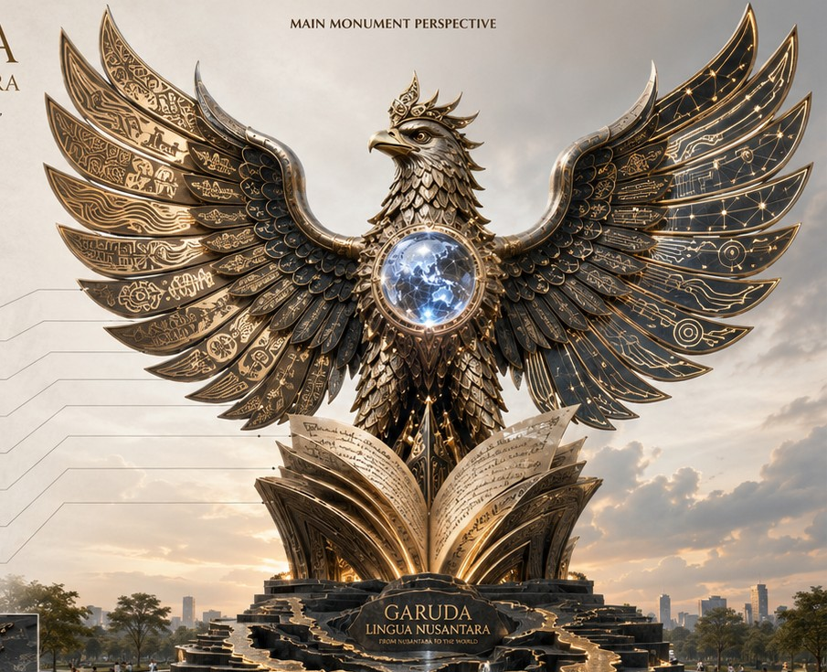

Archipelagic Base
Represents Nusantara as a network of islands, languages, histories, and intellectual routes.
Integrated Garuda–Nusantara Learning Monument
A professional monument learning platform where every symbolic part of the Garuda–Nusantara design becomes a connected route for language education, pronunciation, intelligibility, AI literacy, ESP, digital learning, research ethics, and cultural heritage.

Design Philosophy
The monument is not presented as decoration. It is structured as a readable academic landscape: the base carries heritage, the manuscript carries knowledge creation, the body carries ethical guardianship, the orb carries global intelligibility, and the wings carry field-specific learning routes.
Represents Nusantara as a network of islands, languages, histories, and intellectual routes.
Represents academic writing, research dissemination, classroom knowledge, and publication culture.
Represents integrity, intellectual strength, national dignity, and ethical responsibility.
Represents global intelligibility, international collaboration, and shared meaning across borders.
Represents voice, accent diversity, ELF pronunciation, and intelligible spoken communication.
Represents AI literacy, digital pedagogy, AR interpretation, and responsible educational technology.
Philosophy-Based Hotspot Placement
Choose a symbolic point on the Garuda–Nusantara form. The platform opens its learning route, QR access, visitor task, and assessment connection.
Learning Studio
Each field follows a real learning process: orientation, concept input, guided exploration, practice, reflection, formative assessment, and applied transfer.
Integrated QR Access
The QR panel is intentionally compact. Select a field button to display the relevant QR, target route, and visitor instruction.

Scan to access the selected learning module, visitor task, assessment, and reflection prompt.
Open selected learning routeVoice Map of Indonesia
The map links provincial identity with pronunciation, intelligibility, heritage, ESP, AI literacy, digital learning, research ethics, and English Language Teaching activities.
Scholarly Dossier
The dossier positions Garuda Lingua Nusantara as an intellectual artwork grounded in language education, ELF pronunciation, intelligibility, AI-supported learning, ESP, digital pedagogy, research ethics, and Indonesian cultural knowledge.
The artwork translates academic expertise into public knowledge: language is treated as communication, identity, ethics, and global participation rather than as ornamental text.
The platform connects local Indonesian heritage with global questions in language education: intelligibility, equity of accent, responsible AI, discipline-specific communication, and ethical research.
Visitors do not only observe the monument. They select hotspots, scan compact QR routes, complete learning activities, record voice samples, answer assessments, and reflect on scholarly values.
Protected Dashboard
Use the protected dashboard to update platform text, module content, assessment directions, QR target information, and province voice prompts in the browser.
Enter the owner PIN to manage the learning monument dashboard.
All edits are saved locally in this browser and can be exported as a JSON backup.